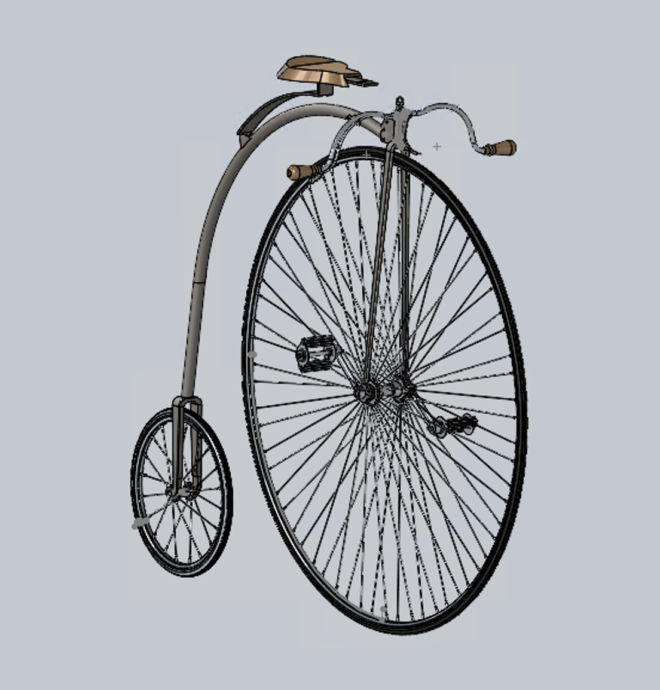
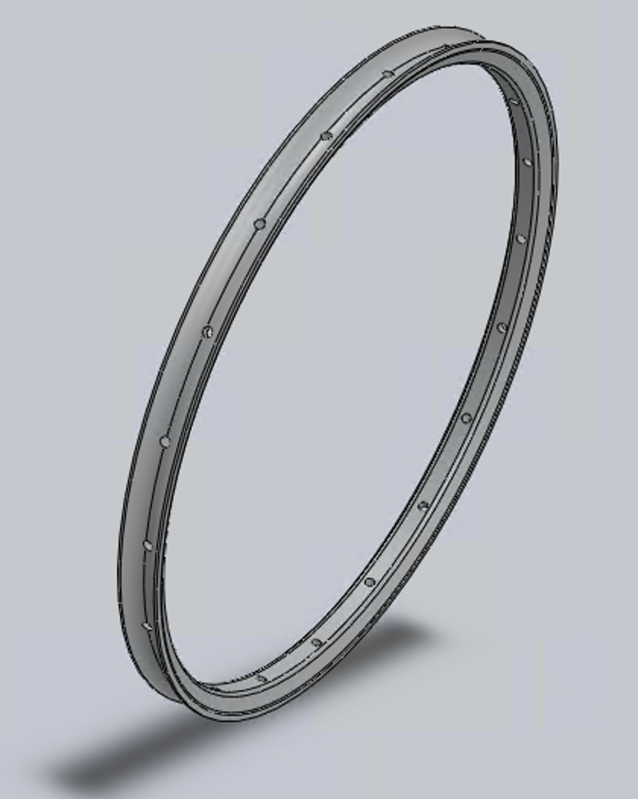
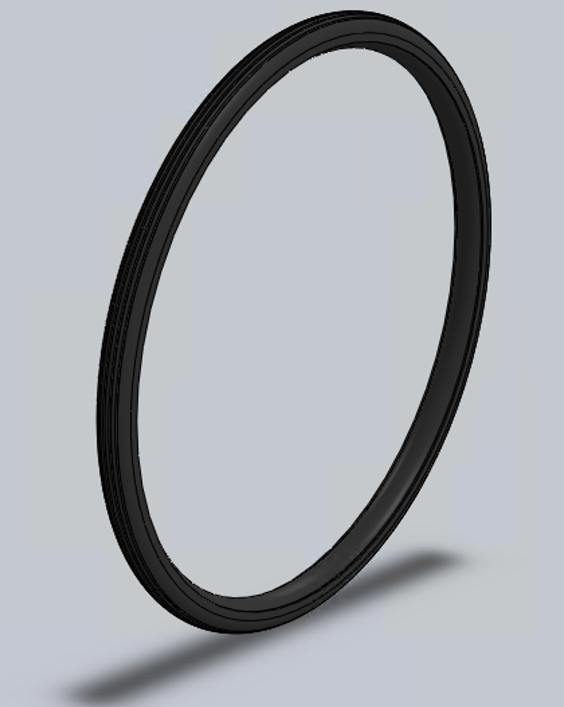
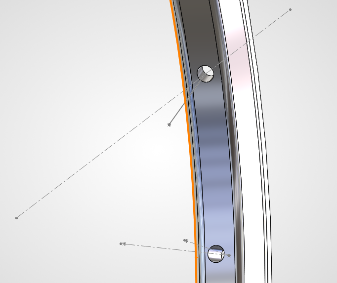
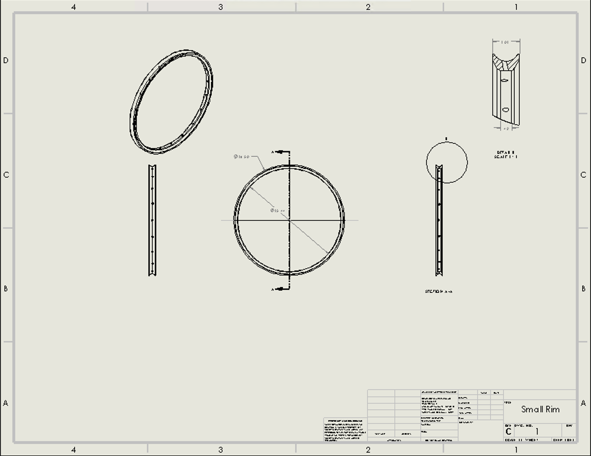
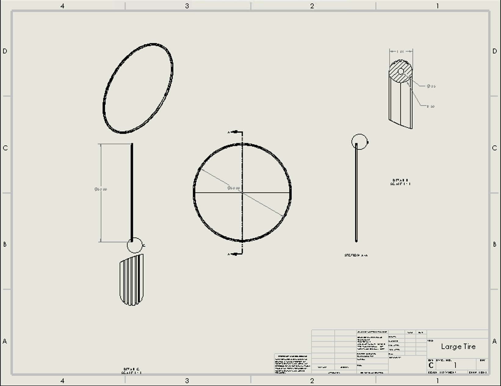

Penny-Farthing — Wheels, Tires & CAM
A team reconstruction of a Victorian penny-farthing bicycle in SolidWorks. I owned the wheels — modeling both rims and tires from section-view revolves, the tilted spoke-hole patterns via reference geometry, a CAM toolpath analysis, and the full drawing package.

Interactive 3D model — the full bike
Spin the complete assembly around in your browser. (To enable: export the assembly to GLB or STL, upload to a free Sketchfab account, then Share → Embed and paste the <iframe> in place of the box below.)
My role: the wheels
This was a large team project for ENGN 1740 (Computer-Aided Visualization & Design), where each group designs a subsystem of a product and documents it to industry standards — component models and drawings, a CAM plan, a tolerance stack-up, and a verification analysis. We chose a penny-farthing: the iconic Victorian bicycle with one enormous front wheel and one small rear wheel.
We were meant to measure a physical product, but none of us had access to a real penny-farthing — they're 150-year-old antiques. So we sourced a reference 3D model online and used SolidWorks' Measure tool on the imported geometry to pull real dimensions to model against. I owned all four wheel components: the large rim and tire (front, ~26 in radius) and the small rim and tire (rear, ~9 in radius). Because several teammates' parts mated to my wheels, I also shared my cross-sections and key radii early so everyone could build to a common reference.
The wheel sub-assembly — in 3D
This is the part I built: rim, tire, hub, and spokes assembled. (Optional — export just the wheel sub-assembly to GLB/STL, upload to Sketchfab, and paste the embed here.)
Modeling the rims & tires
Each rim and tire is a single revolve. I took a section view of the reference geometry to expose the true cross-section, modeled that 2D profile precisely, then revolved it 360° around the wheel axis. Defining the whole wheel from one well-dimensioned cross-section keeps the part accurate and lightweight.


The hard part: angled spoke holes
The reference model had no spoke holes in the rim — so I had to engineer them from scratch. On a real wheel the spoke holes aren't drilled straight into the rim; each is tilted so its spoke can run at an angle toward the hub, alternating side to side around the wheel. Reproducing that correctly was the most demanding part of the whole model.
I worked out the tilt angle from the wheel and hub geometry, then built a chain of reference geometry to place each hole: reference points to locate it on the rim, a reference axis set at the spoke's true angle, and a reference plane normal to that axis. I sketched the hole as a circle on that tilted plane and used an extruded cut along the axis, then patterned the feature around the rim — alternating the tilt direction to match a real spoked wheel.

CAM toolpath analysis
To take the rim from model to manufacturable part, I produced CAM instructions in the SolidWorks CAM add-in — generating and simulating the toolpaths a CNC mill would follow. Because the rim mixes flat, prismatic features with a curved revolved profile, I used two machining strategies:
- 2.5-axis operations for the prismatic features — the spoke holes and flat faces, where the tool works at a fixed depth per pass. Fast and efficient for that geometry.
- 3-axis contouring for the curved rim channel, where the tool moves in X, Y, and Z simultaneously to follow the revolved profile.
Choosing the simpler 2.5-axis path wherever the geometry allowed, and reserving 3-axis only for the truly curved surfaces, is the kind of trade-off that keeps real machining time and cost down. The simulation below shows the toolpath sweeping the rim.
Engineering drawings
I produced full 2D drawings for the wheel components to the course's drawing standard — orthographic views, a section view through the channel, and a scaled detail view of the cross-section, dimensioned for the features critical to function. Click either to view full-size.


Measurement & planning sketches
Since teammates' parts depended on my wheel dimensions, I worked the cross-sections and radii out by hand first — sketching the rim and tire profiles with dimensions, and planning the spoke-hole tilt, so everyone had a shared reference before the CAD was final.

What I took away
This project pushed my SolidWorks past basic features into the tools real parts demand — section-view revolves, reference geometry for angled features, two-strategy CAM, and a standards-compliant drawing package — while coordinating outputs a team relied on. Engineering the spoke holes from scratch, with no reference to copy, was the moment it stopped being "follow the model" and became real design.
Team project for ENGN 1740. A reference 3D model (GrabCAD) was used only as a measurement stand-in for an unavailable physical bike. My contribution: both rims, both tires, the engineered spoke-hole features, the wheel drawings, and the rim CAM analysis.